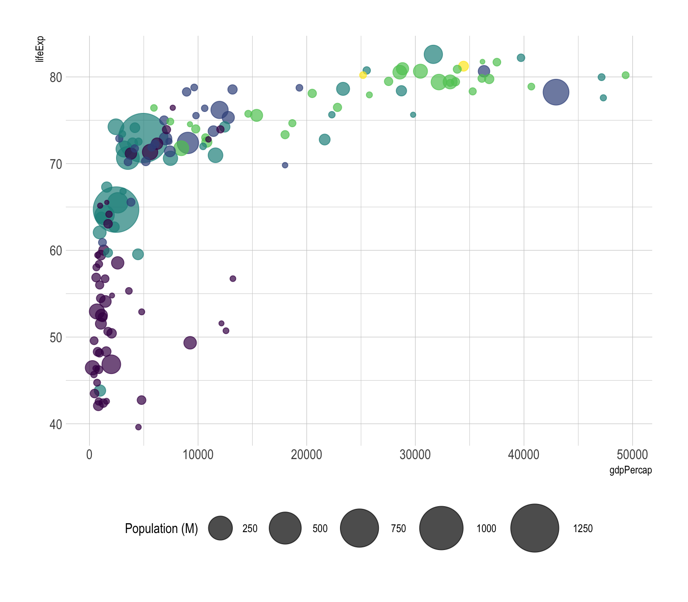
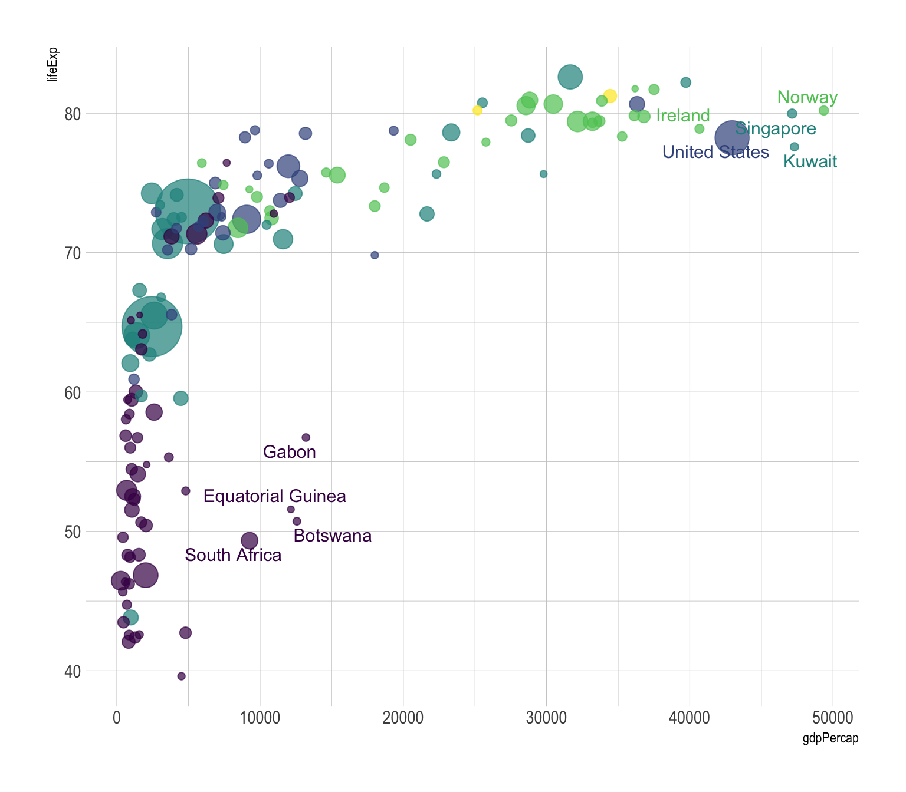
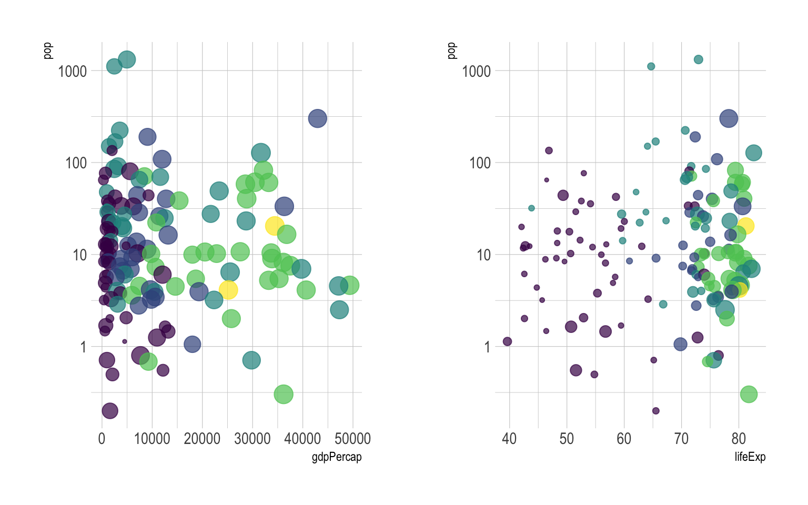

Bubble plot
definition - mistake - related - code
A bubble plot is a scatterplot where a third dimension is added: the value of an additional numeric variable is represented through the size of the dots.
You need 3 numerical variables as input: one is represented by the X axis, one by the Y axis, and one by the dot size.
Here is an example using an abstract of the Gapminder dataset made famous through the Hans Rosling Ted Talk. It provides the average life expectancy, gdp per capita and population size for more than 100 countries. This dataset is available through the gapminder R package.
# Libraries
library(tidyverse)
library(hrbrthemes)
library(viridis)
library(gridExtra)
library(ggrepel)
library(plotly)
# The dataset is provided in the gapminder library
library(gapminder)
data <- gapminder %>% filter(year=="2007") %>% dplyr::select(-year)
# Show a bubbleplot
data %>%
mutate(pop=pop/1000000) %>%
arrange(desc(pop)) %>%
mutate(country = factor(country, country)) %>%
ggplot( aes(x=gdpPercap, y=lifeExp, size = pop, color = continent)) +
geom_point(alpha=0.7) +
scale_size(range = c(1.4, 19), name="Population (M)") +
scale_color_viridis(discrete=TRUE, guide=FALSE) +
theme_ipsum() +
theme(legend.position="bottom")
In this chart, the relationship between gdp per capita and life Expectancy is quite obvious: rich countries tend to live longuer, with a threshold effect when gdp per capita reaches ~10,000. This relationship could have been detected using a classic scatterplot, but the bubble size allows to nuance this result with a third level of information: the country population.
This last variable is much more difficult to interpret than the one on the X and Y axis. Indeed, area is hardly interpreted by the human eye. But the information is here, and if a clear relationship between population and gdp per capita or life expectancy existed, we would spot it.
The previous graphic is quite interesting since it allows to understand the relationship between gdp per capita and life expectancy. However it can be frustrating not to know what are the countries in the extreme part of the graphic, or what are the one out of the general trend. As usual annotating the graphic is a crucial step to make it insightful:
# Prepare data
tmp <- data %>%
mutate(
annotation = case_when(
gdpPercap > 5000 & lifeExp < 60 ~ "yes",
lifeExp < 30 ~ "yes",
gdpPercap > 40000 ~ "yes"
)
) %>%
mutate(pop=pop/1000000) %>%
arrange(desc(pop)) %>%
mutate(country = factor(country, country))
# Plot
ggplot( tmp, aes(x=gdpPercap, y=lifeExp, size = pop, color = continent)) +
geom_point(alpha=0.7) +
scale_size(range = c(1.4, 19), name="Population (M)") +
scale_color_viridis(discrete=TRUE) +
theme_ipsum() +
theme(legend.position="none") +
geom_text_repel(data=tmp %>% filter(annotation=="yes"), aes(label=country), size=4 )
Following the same idea, bubble plot is probably the type of chart where using interactivity makes the more sense. In the following plot you can hover bubbles to get conutry name and zoom on a specific part of the graphic.
# Interactive version
p <- data %>%
mutate(gdpPercap=round(gdpPercap,0)) %>%
mutate(pop=round(pop/1000000,2)) %>%
mutate(lifeExp=round(lifeExp,1)) %>%
arrange(desc(pop)) %>%
mutate(country = factor(country, country)) %>%
mutate(text = paste("Country: ", country, "\nPopulation (M): ", pop, "\nLife Expectancy: ", lifeExp, "\nGdp per capita: ", gdpPercap, sep="")) %>%
ggplot( aes(x=gdpPercap, y=lifeExp, size = pop, color = continent, text=text)) +
geom_point(alpha=0.7) +
scale_size(range = c(1.4, 19), name="Population (M)") +
scale_color_viridis(discrete=TRUE, guide=FALSE) +
theme_ipsum() +
theme(legend.position="none")
ggplotly(p, tooltip="text")prioritize your variables and be sure of what you want to show. Before doing that kind of chart, I believe it is a good practice to try other combinations:p2 <- data %>%
mutate(pop=pop/1000000) %>%
arrange(desc(pop)) %>%
mutate(country = factor(country, country)) %>%
ggplot( aes(x=gdpPercap, y=pop, size = lifeExp, color = continent)) +
geom_point(alpha=0.7) +
scale_color_viridis(discrete=TRUE) +
scale_y_log10() +
theme_ipsum() +
theme(legend.position="none")
p3 <- data %>%
mutate(pop=pop/1000000) %>%
arrange(desc(pop)) %>%
mutate(country = factor(country, country)) %>%
ggplot( aes(x=lifeExp, y=pop, size = gdpPercap, color = continent)) +
geom_point(alpha=0.7) +
scale_color_viridis(discrete=TRUE) +
scale_y_log10() +
theme_ipsum() +
theme(legend.position="none")
grid.arrange(p2,p3, ncol=2)
area as metrics, not diameter.The R and Python graph galleries are 2 websites providing hundreds of chart example, always providing the reproducible code. Click the button below to see how to build the chart you need with your favorite programing language.
R graph gallery Python gallery
Any thoughts on this? Found any mistake? Disagree? Please drop me a word on twitter or in the comment section below:
A work by Yan Holtz for data-to-viz.com